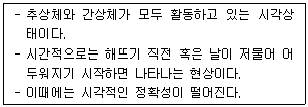
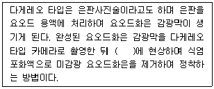
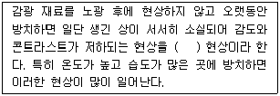
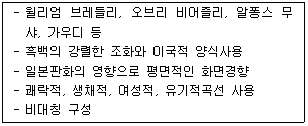
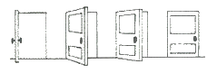
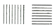
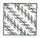
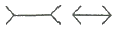
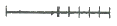
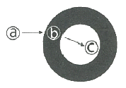

시각디자인산업기사 (2019-03-03 기출문제)
1과목: 색채학
1. 다음 중 주목성이 가장 높은 색은?
- 적색
- 회색
- 녹색
- 청색
(정답률: 96%)

2. 실내 색채계획 시 고려해야 할 사항이 아닌 것은?
- 공간 설계자 중심의 색채계획 반영
- 인간과 공간의 조화
- 환경에 해가 되지 않는 재료와 색채의 선택
- 공간의 아이덴티티 형성
(정답률: 90%)
3. 색상환에 관한 설명으로 옳은 것은?
- 서로 인접한 두 색을 혼합하여 만들어진 색을 중성색이라 한다.
- 색상환에서 가장 거리가 먼 쪽에 있는 색을 유사색이라 한다.
- 원을 이용하여 연속적인 질서를 가지는 색의 관계를 명확하게 나타낸 것을 색상환이라 한다.
- 색상환을 통해 색혼합의 결과로 나타나는 중간색들을 예측할 수는 없다.
(정답률: 76%)
4. CIE 색채계에서 3개의 원자극(원색) 색인 것은?
- RGY
- GYC
- CBR
- RGB
(정답률: 93%)
5. 서로 다른 두 색을 인접시켰을 때 서로의 영향으로 밝은 색은 더 밝게, 어두운 색은 더 어둡게 보이는 현상은?
- 명도대비
- 색상대비
- 채도대비
- 연변대비
(정답률: 76%)
6. 다음 중 노란색의 가시광선 상 파장 분포와 유사한 것은?
- 780 ~ 920 nm
- 600 ~ 700 nm
- 570 ~ 590 nm
- 450 ~ 500 nm
(정답률: 56%)
7. 먼셀 기호 ′2.5B 4/8′에서 명도 값은?
- 2.5
- 4
- 8
- 12
(정답률: 91%)
8. ISCC-NIST 의 색명법상 bG는 어떤 색상인가?
- blue green
- bluish green
- greenish blue
- blight green
(정답률: 51%)
9. 영·헬름홀츠(Young · Helmholtz)의 이론에 대한 설명으로 틀린 것은?
- 세 개의 서로 다른 파장을 혼합하여 다른 어떤 파장과도 동일한 색을 만들 수 없음을 증명하였다.
- 인간의 망막에는 3종류의 색광에 감광하는 수용기가 있다.
- 다양한 색을 재현하는 컬러TV에 응용되고 있다.
- 이성체는 물리적으로 다르지만 지각적으로 동일한 것으로 경험되는 자극을 말한다.
(정답률: 57%)
10. 색의 3속성에 대한 설명 중 옳은 것은?
- 색의 3속성은 색채의 차이를 변별하는데 영향을 주지 못한다.
- 색상은 색을 느끼는 강약, 맑기, 선명도이다.
- 무채색의 밝기는 표면에서의 빛의 반사율과 흡수율로 정해진다.
- 채도는 물체의 표면에서 반사되는 주파장에 의해 결정된다.
(정답률: 73%)
11. 오스트발트의 색채조화론과 관련이 있는 것은?
- 균형점
- 균형의 원리
- 등순색계열의 조화
- 미도
(정답률: 73%)
12. 감법혼색의 설명 중 틀린 것은?
- 색을 더할수록 밝기가 감소하는 색혼합으로, 어두워지는 혼색을 말한다.
- 감법혼색은 색필터 또는 기타 흡수매질의 중첩에 따라 색이 흡수되어 다른색이 생기는 것이다.
- 인쇄시 색료의 3원색인 C, M, Y 로는 순수한 검은색을 얻지 못하므로, K(검정색)를 추가하여 사용한다.
- 2가지 이상의 색자극을 반복시키는 계시혼합의 원리에 의해 색이 혼합되어 보이는 것이다.
(정답률: 65%)
13. 색의 동화현상에 대한 설명으로 옳은 것은?
- 어느 영역의 색이 그 주변색의 영향을 받아 주변색과 이질적으로 변화하는 효과를 말한다.
- 관찰을 반복하면 동화현상이 일어나기 어렵다.
- 점이나 선의 크기와 밀접하게 관계되지만 관철거리에는 영향을 받지 않는다.
- 동화현상의 종류는 명도동하, 색상동화, 채도동화, 색조동화가 있다.
(정답률: 33%)
14. 다음에서 설명하고 있는 순응 현상은?

- 박명시
- 명소시
- 항상시
- 암소시
(정답률: 70%)
15. 디지털컬러 입력장치에 대한 설명으로 틀린 것은?
- 대상물에 빛을 비추어 그 반사광 또는 투과광을 센서로 판독하여 컴퓨터로 전달하는 것을 스캐너라고 한다.
- 스캐너와 디지털 카메라는 장치 내부에 고정된 광원을 사용한다.
- 스캐너의 종류는 주사방식에 따라 회전드럼형, 플랫배드형, 핸디형 등이 있다.
- 디지털카메라는 이미지센서 및 디지털메모리를 사용해서 화상을 획득하고 기록한다.
(정답률: 58%)
16. 색채조화에 관한 설명 중 옳지 않은 것은?
- 색채조화란 2색 또는 3색 이상의 다색배색에 질서를 부여하는 것이다.
- 배색간의 조화원리를 규명하여 일반적이고 객관적인 원리로 체계화한 것이다.
- 색채조화의 공통되는 원리로 질서, 명료성, 동류, 유사, 대비의 원리 등이 있다.
- 색채조화의 보편적 원칙을 추구하는 색채조화론에 의존하는 것이 좋다.
(정답률: 75%)
17. 회전혼색에 대한 설명으로 옳지 않은 것은?
- 망막에 동시에 자극을 준 결과이다.
- 계시혼색, 순차혼색, 연속혼색 이라고도 한다.
- 동일지점에 2가지 이상의 색자극을 반복시키는 원리에 의한 것이다.
- 혼합된 색의 명도는 혼합하려는 색들의 중간명도가 된다.
(정답률: 29%)
18. GIF 포맷에서 재현할 수 있는 컬러의 수는?
- 216
- 236
- 255
- 256
(정답률: 82%)
19. 문·스펜서의 색채조화론과 관련이 있는 것은?
- 조화와 부조화
- 질서의 원리
- 친숙의 원리
- 윤성 조화
(정답률: 59%)
20. 다음 중 색채조절의 3요소가 아닌 것은?
- 명시성
- 작업의욕
- 순응
- 안전성
(정답률: 47%)
2과목: 인쇄 및 사진기법
21. 다음 중 구텐베르크에 의해 사용된 최초의 인쇄방식은?
- 원압식
- 평압식
- 윤전식
- 공판식
(정답률: 67%)
22. 다음 중 현상주약에 해당되지 않는 것은?
- 메톨
- 페니돈
- 하이드로퀴논
- 아황산나트륨
(정답률: 66%)
23. 다음 괄호 안에 들어갈 알맞은 용어는?

- 질산
- 식염수
- 몰식자산
- 수은 증기
(정답률: 58%)
24. 광각렌즈에 대한 설명으로 틀린 것은?
- 원근감이 과장된다.
- 피사계심도가 깊다.
- 화각이 35° 내외로서 좁다.
- 화면의 대각선 길이보다 초점거리가 짧다.
(정답률: 56%)
25. 다음 광선 중 인물의 입체적 표현에 가장 적합한 것은?
- 역광
- 반역광
- 사광
- 정면광
(정답률: 65%)
26. 다음 중 필름의 현상결과(농도, 콘트라스트, 계조 등)에 큰 영향을 미치는 요인으로 가장 거리가 먼 것은?
- 현상실내의 습도
- 현상액의 온도
- 현상시간의 조절
- 현상액의 희석도
(정답률: 50%)
27. 다음 중 평판 판식의 종류가 아닌 것은?
- PS판
- 난백판
- 평오목판
- 실크 스크린판
(정답률: 59%)
28. 다음 서체의 크기 중 14급은 몇 포인트에 가장 가까운가?
- 5 포인트
- 7 포인트
- 10 포인트
- 14 포인트
(정답률: 57%)
29. 다음 중 네거티브용 감광재료의 특징이 아닌 것은?
- 입상성이 높은 재료를 사용한다.
- 일반적으로 고감도의 유제를 사용한다.
- 노출과 현상에 대한 안정성이 요구된다.
- 감색성을 위해 팬크로매틱형을 사용하지 않는다.
(정답률: 59%)
30. 석양을 주광용(daylight type)컬러 필름으로 촬영하였더니 붉은 색조가 많이 나왔다. 이러한 현상의 주된 이유는?
- 석양은 단파장이기 때문이다.
- 석양이 필름보다 색온도가 낮기 때문이다.
- 석양이 필름보다 색온도가 높기 때문이다.
- 사용년도가 지난 필름을 사용했기 때문이다.
(정답률: 50%)
31. 속장에 표지를 대어 펼쳐놓고 한 가운데를 실이나 철사로 맨 다음 가운데를 접어 표지와 함께 다듬제단을 하여 마무리하는 제본 방식은?
- 중철
- 양장
- 무선철
- 호부장
(정답률: 56%)
32. 감도 100인 필름을 가이드넘버 40인 스트로보를 사용하여 5m 거리에서 촬영하려고 할 때 적합한 조리개 값은?
- f4
- f5.6
- f8
- f11
(정답률: 68%)
33. 무습수(waterless)인쇄에 대한 설명 중 틀린 것은?
- 잉크의 유화로 인한 망점의 손상이 적어 인쇄품질이 향상된다.
- 인쇄공정의 에칭액이나 IPA를 사용하지 않기 때문에 친환경적인 인쇄방식이다.
- 판면 온도상승으로 인한 인쇄품질 하락을 방지하기 위해 냉각장치가 있어야 한다.
- 물을 사용하지 않기 때문에 종이의 신축이 적어 인쇄실의 습도조절장치가 필요치 않다.
(정답률: 55%)
34. 네거티브를 인화할 때 노광시간의 결정을 위해 행하는 것은?
- contact print
- test print
- framing
- dodging
(정답률: 43%)
35. 펄프(pulp)의 원료가 되는 식물섬유의 화학적 조성으로만 나열된 것은?
- 폴리올레핀, 클로로포름, 폴리에틸렌
- 크라프트, 폴리올레핀, 폴리에스테르
- 셀룰로오스, 헤미셀룰로오스, 리그닌
- 폴리에스테르, 헤미셀룰로오스, 리그닌
(정답률: 61%)
36. 필터의 노출 배수(필터계수)에 변화를 주는 요인이 아닌 것은?
- 광원의 성질
- 카메라의 종류
- 피사체의 조건
- 필름의 감광도
(정답률: 56%)
37. 피사계 심도를 결정하는 요인으로 가장 거리가 먼 것은?
- 조리개 값
- 초점거리
- 촬영거리
- 셔터속도
(정답률: 57%)
38. 다음 괄호 안에 들어갈 알맞은 용어는?

- 상반칙
- 잠상퇴행
- 상반칙불궤
- 간헐노광
(정답률: 74%)
39. 인쇄잉크의 바이클 성분 중 안료를 피인쇄체에 고착 시키는 주된 역할을 하는 것은?
- 기름(oil)
- 용제(solvent)
- 수지(resin)
- 가소제(plasticizer)
(정답률: 57%)
40. 뒤묻음에 대한 설명으로 틀린 것은?
- 아트지보다 매트지에서 발생이 적다.
- 잉크피막이 두꺼울수록 발생하기 쉽다.
- 인쇄실의 온도가 낮을수록 발생하기 쉽다.
- 사용 스프레이 파우더의 입경이 잘못 설정되었다.
(정답률: 29%)
3과목: 시각디자인론
41. 다음은 어느 디자인 사조의 양식적 특징인가?

- 옵아트
- 구성주의
- 아르누보
- 아르데코
(정답률: 51%)
42. 근대디자인의 조형성에 영향을 준 사조와 거리가 먼 것은?
- 입체주의
- 다다이즘
- 표현주의
- 구성주의
(정답률: 61%)
43. 미국의 알렉스 오즈번이 창안한 효율적인 아이디어 발상법으로서 자유로운 발언을 하는 과정에서 새로운 아이디어를 얻는 방법은?
- 체크리스트법
- 시네틱스
- 브레인스토밍
- 관찰법
(정답률: 86%)
44. 디자인 정책에 대한 설명으로 틀린 것은?
- 디자인 자체만을 위한 고도의 정책
- 기업의 본질에 맞는 디자인 통합정책
- 기업경영 차원의 디자인 정책
- 시각적 방법에 기초한 기업이미지통합
(정답률: 78%)
45. 등각 투상도에 대한 설명이 옳은 것은?
- 물체의 세 모서리가 120°의 등각을 이룬다.
- 물체의 세 모서리가 90°의 등각을 이룬다.
- 두 개의 옆면 모서리는 수평선과 45°를 이룬다.
- 두 개의 옆면 모서리는 수평선과 60°를 이룬다.
(정답률: 50%)
46. 선의 종류에 대한 설명으로 틀린 것은?
- 직선은 분방함과 풍부한 감정을 나타낸다.
- 수직선은 고결, 희망을 나타내며 상승감, 긴장감을 준다.
- 수평선은 평화, 정지를 나타내고 안정감을 더해 준다.
- 포물선은 속도감을 준다.
(정답률: 80%)
47. 독일공작연명(DWB)을 창립한 사람으로서 제품을 제작할 때 미(美)보다 용(用)을 중시한 디자이너는?
- 앙리 반데 벨데
- 월터 그로피우스
- 헤르만 무테지우스
- 미하엘 토네트
(정답률: 58%)
48. 우리나라 현대디자인의 태동기로 볼 수 있는 지배적인 시기는?
- 1945년 해방을 기점으로 본다.
- 1950년대에 순수미술의 미를 산업과 광고분야에 응용한다는 생각이 있었다.
- 1960년대를 기점으로 수출 지향적인 경제 변혁기로부터 기인한다.
- 1970년대 이후 디자인과 일반 산업과 협력관계를 맺은 시기부터이다.
(정답률: 55%)
49. 디자인 매니지먼트의 목적 및 필요성으로 가장 적합한 것은?
- 창의성, 독창성 등의 예술적 특성의 가치 확대
- 조직화, 지휘, 통제 등 디자인 과정의 체계화
- 조직관리와 자원활용의 기술
- 회계관리와 인사고과의 효율화
(정답률: 64%)
50. 미술공예운동의 발상지라 할 수 있는 국가는?
- 프랑스
- 벨기에
- 독일
- 영국
(정답률: 47%)
51. 동일한 요소나 대상을 연속적으로 되풀이하는 구성을 통해 효과적으로 표현할 수 있는 조형원리는?
- 비대칭
- 강화
- 대비
- 리듬
(정답률: 81%)
52. 다음 디자인 과정 중 첫 번재 단계는?
- 아이디어 단계
- 문제파악 단계
- 시각화 단계
- 구체화 단계
(정답률: 64%)
53. 다음 용어에 대한 설명 중 틀린 것은?
- 픽토그래픽 – 단순화된 그림에 의하여 대상의 성질 혹은 그 사용법을 표시하는 것
- DM – 실제적이고 구체적인 목적을 가지고 우편물의 형식으로 직접 소구대상에게 어필하는 것
- POP 디자인 – 상품을 선전하고 판매하기 위해 판매 현장에서 직접적인 구매충동을 유도하는 것
- 슈퍼그래픽 – 물체로부터 날아오는 빛의 파동을 레이저장치를 이용하여 기록하였다가 나중에 그대로 재생하는 것
(정답률: 67%)
54. 다음 그림을 통해 어떤 현상을 느낄 수 있는가?

- 운도의 항상
- 형의 항상
- 밝음의 항상
- 변화의 항상
(정답률: 36%)
55. 바우하우스의 역사를 4기로 구분한 것 중 잘못 짝지어진 것은?
- 제1기 : 뉴저만(New German) 바우하우스 시대
- 제2기 : 데사우(Dessau) 바우하우스 시대
- 제3기 : 베를린(Berlin) 바우하우스 시대
- 제4기 : 뉴(New) 바우하우스 시대
(정답률: 43%)
56. 제도에서 대칭형의 중심부분을 표현할 때 사용하는 선은?
- 가는 파선
- 굵은 파선
- 굵은 실선
- 가는 1점 쇄선
(정답률: 54%)
57. 디자인 조건의 변화에 해당되지 않는 것은?
- 차별화된 세계적 브랜드화
- 사용자의 편의에 중점을 둔 디자인
- 환경을 고려한 디자인
- 과거의 고정된 집단의 취향 중시
(정답률: 86%)
58. 다음 중 입체에 대한 설명으로 틀린 것은?
- 입체는 면이 이동한 자취이다.
- 입체는 길이, 너비, 깊이, 형태와 공간 등의 특징을 가진다.
- 순수형 입체는 구, 원통, 육면체 등과 같이 단순한 형이다.
- 입체의 유형 중 순수형의 가장 단순한 분류는 직선계, 중간계, 수평계가 있다.
(정답률: 62%)
59. 평행 투시도라고도 하며, 인테리어 공간이나 건축 설계에서 보편적으로 쓰이는 투시도법은?
- 1점 투시도법
- 2점 투시도법
- 3점 투시도법
- 4점 투시도법
(정답률: 34%)
60. 다음 중 광고 커뮤니케이션 수용과정에서 제일 먼저 일어나는 현상은?
- 욕구(esire)
- 관심(Interest)
- 행동(Action)
- 주의(Attention)
(정답률: 60%)
4과목: 시각디자인실무 이론
61. 컴퓨터 그래픽스의 이미지 작업 시 고려할 사항으로 거리가 먼 것은?
- 클립아트를 사용하는 경우 저작권을 확인해야 한다.
- 처음 입력된 이미지의 화질이 최종 결과물의 화질을 결정한다.
- 가장 높은 화질의 이미지 고해상도가 필요할 때는 고급인쇄에 사용되는 평판스캐너를 사용해야 한다.
- 이미지는 출력을 고려하여 작업 크기보다 크게 스캔을 받는다.
(정답률: 40%)
62. 기업이 소비자를 시장, 수요, 매출이라는 양적 존재로 보는 방식에서 벗어나 기업 마케팅 활동의 중요한 존재로 파악할 때 가장 먼저 분석하여야 할 것은?
- 위험 부담
- 라이프 스타일
- 소비자 운동
- 매출
(정답률: 72%)
63. 신제품 개발의 절차 중 아이디어가 상품화되었을 때 예상되는 이익, 이것을 생산하고 마케팅 하는데 드는 비용, 그리고 결과적으로 얻게 될 이익의 폭을 규명하는 단계는?
- 아이디어 설정
- 사업성 분석
- 제품개발
- 상품화
(정답률: 77%)
64. 다음 착시 현상의 그림 중 뮐러 라이어(Muller-Lyer)의 착시도형에 해당되는 것은?




(정답률: 68%)
65. 웹에서 가장 많이 사용되는 이미지 파일의 형식은?
- JPG, GIF
- JPG, PDF
- GIF, AI
- PNG, PSD
(정답률: 80%)
66. 다음 중 글자의 기준선을 나누는 척도, 글자의 크기, 굵기, 자리 등을 결정하는 기준은?
- 세리프(Serif)
- 훼밀리(Family)
- 모듈(Modul)
- 카운터(Counter)
(정답률: 50%)
67. 게슈탈트에서 형이나 형태를 쉽게 인지하기 위한 조건으로 옳은 것은?
- 단순성, 규칙성, 대칭성, 기억의 용이성
- 복잡성, 질서성, 비대칭성, 기억의 용이성
- 단순성, 복잡성, 질서성, 기억의 용이성
- 단순성, 비대칭성, 질서성, 기억의 용이성
(정답률: 59%)
68. 포스터가 시각 광고물로서 본격적으로 사용된 역사적 주요 배경은?
- 유럽 연극제 포스터의 본격 등장
- 고대 이집트의 도망간 노예 소유주 광고
- 18세기말에 발명된 석판인쇄기술의 보급
- UN 인권선언 30주년 기념행사
(정답률: 43%)
69. 현대 커뮤니케이션의 특징 중 가장 관련이 적은 것은?
- 비언어적 정보량의 증대
- 다양한 정보량의 축소
- 대량전달과 빠른 전달속도
- 멀티미디어를 통한 정보의 가공
(정답률: 79%)
70. 인쇄제판에서 사용하는 스크린 선수에 대한 설명으로 옳은 것은?
- 스크린의 1 cm 폭 안에 들어가 있는 선이나 점의 수
- 스크린의 1 inch 폭 안에 들어가 있는 선이나 점의 수
- 스크린의 1 cm 정방향의 대각선에 있는 선이나 점의 수
- 스크린의 1 pt 폭 안에 들어가 있는 선이나 점의 수
(정답률: 55%)
71. 자동차에 대한 소비자의 선호도를 스포티한 것과 사치스러운 것 두 개의 속성을 가지고 공간 속 위치를 설정 조사하고자 할 때의 시장 포지셔닝 작성 방법은?
- 의미론적 차별화법
- 다차원적 척도법
- 체크리스트법
- 매트릭스법
(정답률: 38%)
72. 아래 그림은 형태의 인식과정을 도식화 한 것이다. ⓐⓑⓒ에 들어갈 내용으로 옳은 것은?

- ⓐ 물리적 세계 ⓑ 심리적 세계 ⓒ 생리적 세계
- ⓐ 물리적 세계 ⓑ 생리적 세계 ⓒ 심리적 세계
- ⓐ 생리적 세계 ⓑ 물리적 세계 ⓒ 심리적 세계
- ⓐ 생리적 세계 ⓑ 심리적 세계 ⓒ 물리적 세계
(정답률: 50%)
73. TV 광고의 특성이 아닌 것은?
- 움직이는 영상으로 실증적 광고에 적합하다.
- 개인적인 몰입(감정이입)을 유도할 수 있다.
- 특정인물을 연계시켜 친밀한 이미지로 제품을 소구할 수 있다.
- 다른 매체에 비해 저렴한 예산으로 다양한 예산편성을 할 수 있다.
(정답률: 86%)
74. 꼭두각시, 장난감, 프리즘, 현대의 영화나 TV 등은 어떠한 대상의 연장이라 할 수 있는가?
- 시각적 대상
- 유희적 대상
- 조작적 대상
- 공간적 대상
(정답률: 61%)
75. “Good Design is Good Business” 의 의미와 가장 가까운 것은?
- 디자인 아키텍쳐의 중요성
- 디자인 매니지먼트의 중요성
- 디자인 컨설턴트의 중요성
- 디자인 크리에이티브의 중요성
(정답률: 66%)
76. 어떤 도형을 보고 난 후 인간의 기억은 시간의 흐름에 따라 점차 약화된다. 따라서 빠르게 판단할 수 있고, 쉽게 인식되고 기억되는 형의 디자인으로 옳은 것은?
- 기하학적 형
- 복잡한 형
- 자연계의 형
- 추상적 형
(정답률: 46%)
77. 마케팅 활동의 사회, 경제적 중요성과 거리가 먼 것은?
- 소비자의 수요 및 생활양식의 충족과 지원
- 소비자 커뮤티케이션의 촉진
- 시간, 장소, 소유 정보효용의 창조
- 기업 문화의 변화 촉진
(정답률: 56%)
78. 형태, 위치, 움직임의 유무 등에 따라 여러 가지로 분류할 수 있는 교통광고의 형태가 아닌 것은?
- 네온사인형 광고
- 포스터형 광고
- 와이드 칼라형 광고
- 액자형 광고
(정답률: 42%)
79. 잡지 광고의 정의를 설명한 것 중 잘못된 것은?
- 소비자와 쌍방향 커뮤니케이션이 가능하다.
- 매호가 서로 연관성을 갖고 특성 있는 내용으로 편집, 발행되어야 한다.
- 일반적으로 주간 이상의 발행 간격을 갖는 서적형태의 정기 간행물이라고 볼 수 있다.
- 본질적으로 신문과 유사한 매스커뮤니케이션 매체의 하나로 특정한 제목을 가지고 일정한 간격으로 간행된다.
(정답률: 77%)
80. 브랜드 아이덴티티(Brand Identity)의 구성요소로 거리가 먼 것은?
- 브랜드 슬로건(Bran Slogan)
- 브랜드 로고타입(Brand Logotype)
- 가격(Price)
- 네이밍(Naming)
(정답률: 88%)